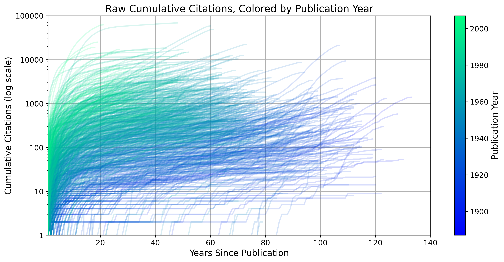
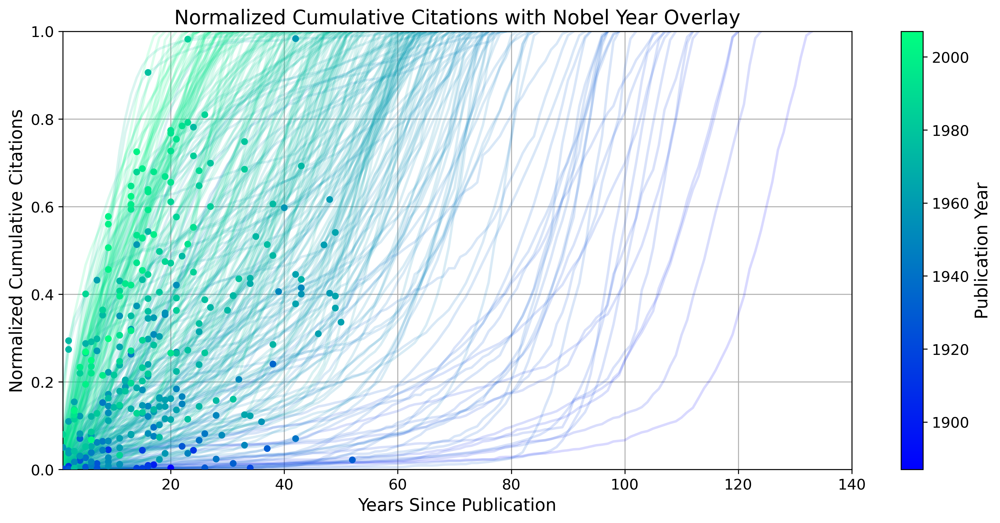
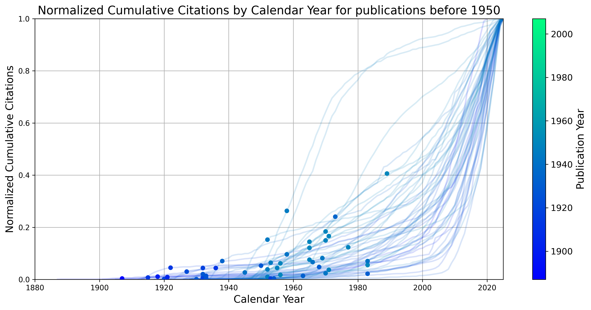
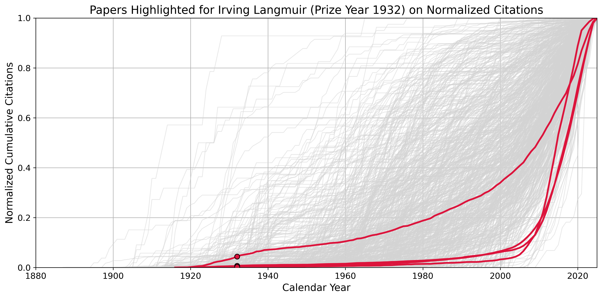
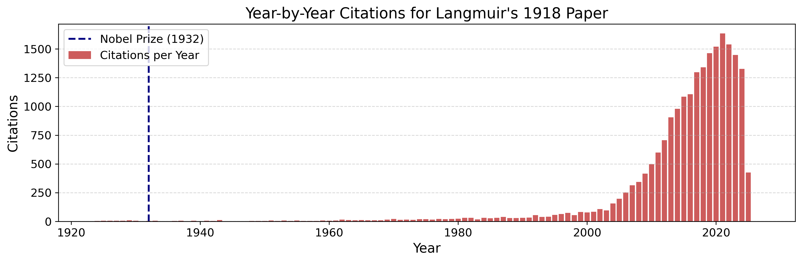
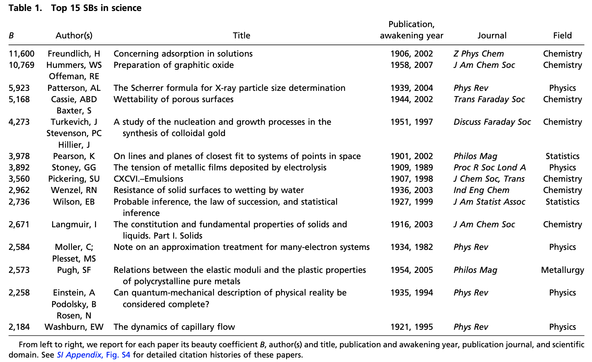

Cross-posted on my new Substack newsletter
The Nobel Prize is the highest honor in science, awarded in physics, chemistry, and medicine. Alfred Nobel envisioned it as a way to reward those who “have conferred the greatest benefit to humankind.” Studying the people and discoveries behind these awards offers a window into how scientific breakthroughs happen. With more than a century of Nobel history, we now have enough data to begin analyzing the ingredients that underlie prize-winning work.
A recent post by Brian Potter on Construction Physics took a deep-dive into the people behind the prizes in chemistry, physics, and medicine. This excellent piece examined questions like: Where were Nobel laureates born? Where were they educated? Where did they conduct their groundbreaking work? And when did they receive recognition?
I loved the focus on people. Understanding the individuals behind scientific progress is deeply underrated. We might learn far more about how to foster breakthrough discoveries by studying the lives and trajectories of those who produce them. That said, Brian’s post also got me thinking about the nature of the work itself. Are there patterns in how impactful a discovery is before it wins the Nobel? Does the prize boost its influence? Could we predict Nobel-worthy work and accelerate its impact?
One measure of scientific impact is citation counts, which is the number of times a paper is referenced by other papers. Citation counts are appealing because they provide a simple, quantitative measure of influence within the scientific community. But they also come with serious limitations. This paper argues that the obsession with citations has pushed science toward safe, incremental advances rather than bold, exploratory work. As the authors write, “our main concern with citations is that they reduce scientific progress to a set of numbers that capture just one important dimension of scientific productivity,” and “citations are an imperfect and noisy way to measure scientific influence, and yet, citations are a useful measure of scientific influence.”
While they go on to suggest alternative metrics, such as quantifying novelty, citation counts remain our best available tool for now. With those caveats in mind, let’s explore what they can reveal about the impact and trajectory of Nobel-winning work.
Gathering data on citation counts
Brian’s dataset on GitHub includes information on 545 Nobel laureates in physics, chemistry, and medicine from 1902 to 2016. For each laureate, it lists the type of prize, the award year, and the publications associated with the prize winning work, along with their digital object identifiers (DOIs) and original publication dates. (See Brian’s post for more details on how the data were compiled.)
This was a great foundation for adding citation data. I used the OpenAlex database to retrieve year-by-year citation counts for each publication. Some entries were missing DOIs, so I manually filled in gaps when possible. I then automated the process using the OpenAlex API. I was able to find citation data for 696 of the 749 unique publications. The ones with missing information tended to be older publications or laureates’ entries with incomplete metadata. (You can find my code and dataset on GitHub.)
One important caveat: how do we know which papers truly contributed to the Nobel-winning discovery? Often, breakthroughs are built on a foundation of earlier work, and the “key” paper may not be obvious. For this post, I’ve relied on the papers included in Brian’s dataset, which itself draws from the methodology used in this paper.
Total citation counts for Nobel Prize work
A simple place to start is by asking: how many total citations do Nobel Prize-winning papers receive? Naturally, these numbers depend both on how long a paper has been published and on broader trends like the growing number of papers published each year.
The scatter plot below shows each Nobel Prize-winning publication as a point, plotted by its year of publication and total citation count. (The y-axis is on a logarithmic scale.) One pattern is immediately clear: newer papers tend to receive far more citations than older ones, even though they have been around for less time1.
Citation counts over time
While total citation counts offer a snapshot of overall impact, looking at how that impact grows over time can be more revealing, especially when thinking about how to accelerate scientific progress.
The chart below shows the cumulative citation count for each prize-winning publication, starting from its year of publication. Each trace begins at zero and tracks how citations accumulate over time. The lines are color-coded by publication year: darker blues for older papers, and greenish hues for more recent ones. (The y-axis is on a logarithmic scale.) By aligning all traces to year zero at the time of publication, we can compare how different papers accumulate citations over time.

Newer papers tend to show a rapid initial rise in citations, often followed by a plateau. Older papers, by contrast, accumulate citations more slowly. But intriguingly, some older papers experience a second surge in attention roughly 80 years after publication. These are raw citation counts and don’t account for the growing volume of scientific literature over time, which likely skews results in favor of newer papers.
To better compare trajectories, I normalized each paper’s cumulative citation count by its total citations to date. The chart below shows these normalized curves, with all papers aligned to their publication year (set to year 0). I’ve also marked the year each paper won the Nobel Prize with a dot.

The plot reveals a wide range of citation trajectories. Some papers make an immediate impact, while others remain quiet for decades before suddenly gaining attention. On average, newer papers take off more quickly, whereas older papers often lie dormant for many years before their influence emerges.
The second awakening
Some older papers show a striking pattern: a second surge in citations many decades after publication. I find this fascinating. Were these papers simply ahead of their time, like theoretical work that required experimental advances to be appreciated? Or do these later bursts reflect new applications of old ideas?
Understanding the causes of these second awakenings might offer clues for accelerating scientific impact. After all, these weren’t obscure papers. They were part of Nobel-winning work, already recognized as major contributions. And yet, many remained relatively quiet for decades, sometimes more than 80 years, before gaining broader influence.
The chart below highlights only those papers with more than 1,000 total citations. While the 1,000-citation cutoff is arbitrary, it helps illustrate that this isn’t just about a paper going from 2 to 20 citations. Many of these late bloomers have become highly influential.

In the earlier plot, all citation curves were aligned to year zero at the time of publication. But I was curious if the second citation surge tends to happen around the same real-world time for these older papers? For example, was there a common trigger, like something in the 1990s, that revived interest across multiple works?
The chart below re-aligns the data to actual publication years and includes only papers published before 1950, for visual clarity. Many of these curves resemble classic exponential growth, while others show distinct inflection points, which could be possible signs of external events or developments that reignited attention.

One striking example is Irving Langmuir, whom I’ll explore more deeply in a future post. He won the Nobel Prize in Chemistry in 1932 for his work on surface chemistry. In the chart below, I’ve highlighted his four prize-associated papers in crimson, with all others shown in gray.
Three of those four papers received less than 10% of their total citations before the early 2000s, despite being recognized with a Nobel just 15 years after publication. One in particular, his 1918 paper titled “The adsorption of gases on plane surfaces of glass, mica and platinum,” now has over 20,000 citations. What was it originally recognized for? What sparked its resurgence nearly a century later? And what had to change in the field, or for science more broadly, for that revival to happen?


Sleeping Beauties of Science
In metascience, a commonly used term for these late-blooming papers is “Sleeping Beauties.” Coined by Anthony van Raan, the term refers to scientific publications that remain unnoticed or under-cited for decades before suddenly receiving widespread attention. Since then, several groups have attempted to quantify Sleeping Beauties using citation data. For example, one large-scale study analyzed over 22 million papers across the natural and social sciences to identify the most prominent examples of this phenomenon. Below is a table from this paper listing the top Sleeping Beauties.

Among the papers identified in the large-scale study were several well-known examples: the Einstein, Podolsky, and Rosen (EPR) paper, “Can quantum-mechanical description of physical reality be considered complete?”; Langmuir’s “The constitution and fundamental properties of solids and liquids. Part I. Solids”; and Wenzel’s “Resistance of solid surfaces to wetting by water.”
While the EPR paper was a Sleeping Beauty in terms of citation delay, it, and Einstein himself, were highly recognized at the time. Similarly, Langmuir won the Nobel Prize in Chemistry in 1932, but the broader impact of his prize-winning work didn’t take off until the early 2000s. Of the three, only Wenzel’s paper fits the strictest definition of a Sleeping Beauty: it received little to no recognition or impact until decades later.
So while citation data might suggest that some papers had no early influence, that doesn’t always mean they were overlooked. As this excellent essay in Works in Progress argues, there are many reasons a paper might appear to “sleep”, like from being ahead of its time to needing the right application context. Based on the examples above, even highly celebrated, Nobel-recognized work can remain dormant for much of its life.
Conclusions
In this post, I explored the impact of Nobel Prize-winning work through the lens of citation counts. While citation counts have clear limitations, they offer a useful, if one-dimensional, measure of a publication’s influence within its field.
Notably, newer papers tend to have far more citations than older ones, despite having been published more recently. This may be due to the sheer increase in the number of papers published today, as well as the tendency of authors to cite only the most immediate prior work. For example, if I develop a new microscope, I would cite recent advances in imaging and not Newton’s optics. These patterns create a compounding effect that favors recent publications.
Even among Nobel-winning papers, citation trajectories vary widely. Some take off quickly and plateau; others remain dormant for decades before exploding in impact. I find this second group especially fascinating. It’s tempting to assume these late bloomers were simply unrecognized at first. But the papers analyzed here were all identified as Nobel-worthy, yet they only reached their full influence many decades later.
So, how might we speed up these delayed awakenings? One approach is to learn from history. If we want to predict which papers could become transformative, we might start by identifying already-recognized work, like Nobel-winning research, and finding ways to bring it into new fields more deliberately, rather than waiting for serendipity. Maybe AI can help us do that.
Thanks for reading!